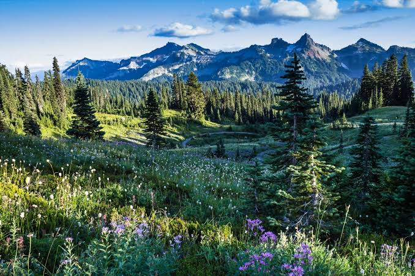

Washington ist ein Bundesstaat der Vereinigten Staaten von Amerika. Er liegt im Nordwesten der USA an der Küste des Pazifischen Ozeans, nördlich von
Oregon, westlich von Idaho und südlich von British Columbia in Kanada.
Gemessen an seiner Fläche steht Washington unter den US-Bundesstaaten mit 184.665 Quadratkilometern an 18. Stelle, gemessen an seiner Bevölkerung von 7.705.281 Einwohnern an 13. Stelle
(Stand 2020). Der Großteil der Bevölkerung konzentriert sich rund um den Puget Sound, eine etwa 150 km lange, inselreiche und weitverzweigte Bucht im Westen des Staates, an der auch
die Hauptstadt Olympia sowie die mit Abstand größte Stadt Seattle liegen.
Quellen- und Lizenzhinweis:
Dieser Text basiert auf dem Wikipedia-Artikel
Washington
(geänderte Fassung) und steht unter der Lizenz
Creative Commons Attribution-ShareAlike 4.0 International (CC BY-SA 4.0).
Das Bild ist von
USA Tipps